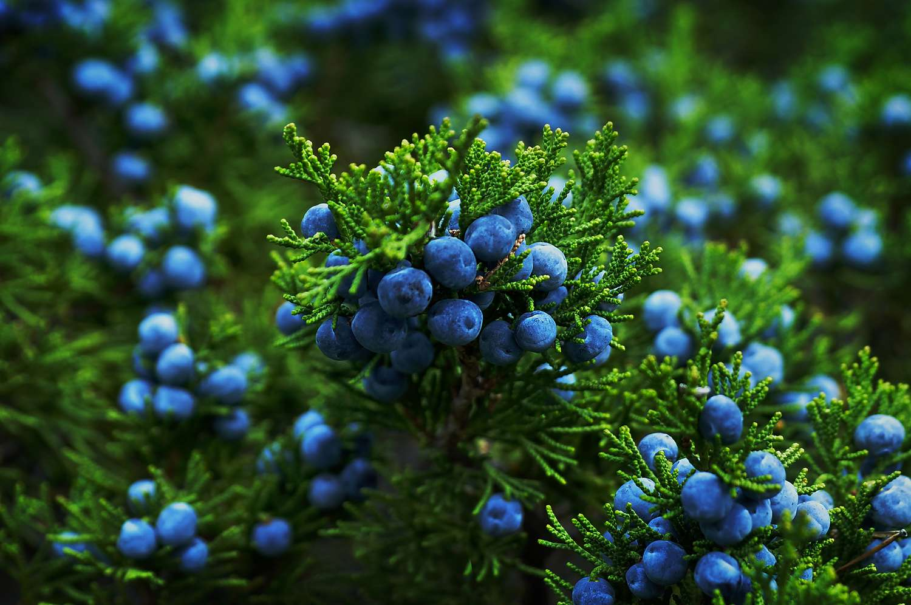
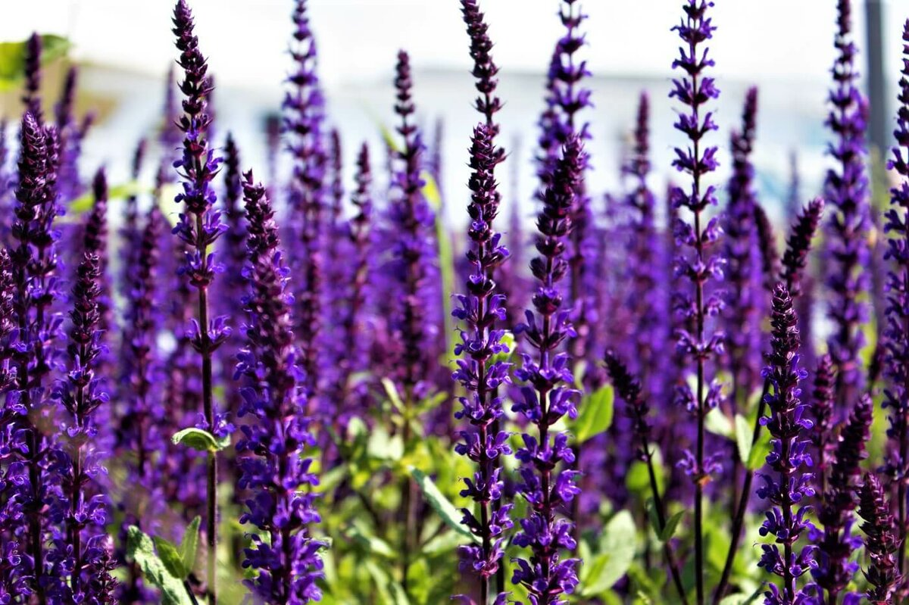

Повышает умственную и физическую активность, восстанавливает психо-эмоциональную гармонию при переутомлении и нервном истощении, устраняет чувство страха. Является прекрасным антидепрессантом, улучшает настроение, устраняет чувство страха, активизирует умственный и физический потенциал у пожилых людей. Устраняет комплекс неполноценности и зависимость от чужого мнения, объективизирует самооценку. Наполняет воздух прекрасным свежим ароматом, обостряет восприятие, придает бодрости и сил. Располагает к нежности. Помогает восполнить энергетические потери тем, кто пострадал от любовного соперничества.
В древности ее считали целебным средством, способным срастить переломы и излечить рак.
 Аромат против лени, апатии и скуки. Освежает, повышает собранность, творческие и деловые качества личности. Устраняет стрессовые реакции и разрушительные эмоции: раздражительность, агрессию. Тонизирует, укрепляет нервы, повышает жизненную активность, избавляет от чувства страха, устраняет апатию, умственное утомление, проясняет мироощущение. Можжевельник помогает всегда находить идеальный выход из сложных ситуаций. Создает идеальную атмосферу для центрирующих упражнений. Запах можжевельника стимулирует, восстанавливает душевное равновесие, направляет мысли и чувства к благородным целям.
 Истоки легенд о шалфее восходят к древним грекам и римлянам, которые считали, что он придает мудрость и сообразительность. Римляне, а также средневековые арабские врачи даже приписывали шалфею возможность наделять людей бессмертием. Древняя арабская пословица гласит: "Как может человек умереть, когда у него есть шалфей в саду?" В средние века шалфей находил поистине универсальное применение для лечения потери памяти, лихорадки, проблем с кишечником и печенью, глазных и инфекционных заболеваний, а также эпилепсии. Он также защищал от дурного глаза, особенно если сжечь сухое растение, и привлекал богатство. По одному из поверий, шалфей вырастал в саду дома, где правят женщины. По другому поверью, шалфей хорошо растет, когда здоров хозяин сада, и вянет, когда он умирает.
Бергамот — это цитрусовое растение, известное своим ароматным маслом, которое широко используется в парфюмерии, косметике и, конечно же, в чае! Именно масло бергамота придает чаю "Эрл Грей" его неповторимый вкус и аромат.
Бергамот (Citrus bergamia) — это небольшое вечнозеленое дерево, достигающее в высоту около 4,5 метров. Считается гибридом горького апельсина (Citrus aurantium) и лимона (Citrus limon).
Больше информации о бергамоте можно найти на Википедии (открывается в новом окне).